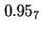
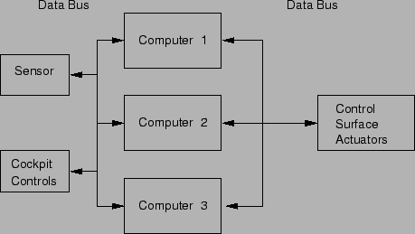

Next: การประยุกต์ใช้ในระบบที่ต้องการยืดเวลาการซ่อมบำรุง (Maintenance Postponement Applications)
Up: งานประยุกต์ของระบบที่คงทนต่อความเสียหาย
Previous: การประยุกต์ใช้ในระบบที่มีอายุการใช้งานยาว (Long-Life Applications)
Contents
Index
การประยุกต์ใชัในระบบคำนวณที่มีความสำคัญ (Critical-Computation Applications)
การใช้งานคอมพิวเตอร์ที่มีผลโดยตรงต่อชีวิตและทรัพย์สิน เป็นระบบที่มีความสำคัญ และใช้ระบบที่สามารถคงทนต่อความเสียหายในการทำงาน ตัวอย่างการใช้งานเช่น ระบบควบคุมการบิน, ระบบที่ใช้ในการทหาร, ระบบควบคุมอุตสาหกรรมที่มีความสำคัญ
ใน ระบบคำนวณที่มีความสำคัญ ความผิดพลาดของประสิทธิภาพของระบบ จะสามารถสร้างความเสียหายอย่างใหญ่หลวงได้ โดยทั่วไประบบคำนวณที่มีความสำคัญ มีความต้องการความน่าจะเป็นที่ระบบสามารถทำงานได้ที่ระดับ  ณ. เวลาการทำงาน 3 ชั่วโมง อย่างไรก็ตาม ความต้องการดังกล่าวสามารถเปลี่ยนแปลงได้ ตามการประยุกต์ใช้งาน
ตัวอย่างระบบคำนวณที่มีความสำคัญ ที่เห็นกันแพร่หลายได้แก่ การควบคุมกระสวยอวกาศ ซึ่งถ้าระบบควบคุมไม่สามารถทำงานได้ในขณะที่กระสวยขึ้นหรือลง จะส่งผลให้เสียกระสวยนั้นไป การออกแบบระบบคอมพิวเตอร์ที่ใช้ในกระสวยอวกาศ เป็นการออกแบบระบบที่สามารถทนทานต่อการเสียหายของคอมพิวเตอร์ถึงสามเครื่องพร้อมกัน
ตัวอย่างการใช้งานระบบคำนวณที่มีความสำคัญ ได้แก่ ระบบควบคุมการบินของเครื่องบิน X-29 แสดงในรูป 9.3 เนื่องจากเครื่องบิน X-29 ออกแบบมาให้สามารถใช้ประโยชน์จากอากาศพลศาสตร์ไห้มากที่สุด การควบคุมด้วยมือไม่สามารถทำได้ทัน จำเป็นต้องใช้คอมพิวเตอร์ควบคุมในการรักษาเสถียรภาพของเครื่องบิน ถ้าระบบควบคุมไม่สามารถทำงานได้ เครื่องบินจะไม่สามารถบินได้ ซึ่งการควบคุมการบินทั้งหมดอาศัยสัญญาณอิเล็กทรอนิกส์
รูป 9.3 แสดงส่วนควบคุมของระบบที่ประกอบด้วย คอมพิวเตอร์ที่เหมือนกันทุกประการสามชุด เครื่องคอมพิวเตอร์ทั้งสามเครื่องทำงานเดียวกัน ในคอมพิวเตอร์แต่ละเครื่อง ประกอบด้วยดิจิตอลคอมพิวเตอร์ และอนาล็อกคอมพิวเตอร์ในเครื่องเดียวกัน ส่วนของอนาล็อกคอมพิวเตอร์จะถูกใช้งาน ถ้าดิจิตอลคอมพิวเตอร์ไม่สามารถใช้งานได้ ผลการคำนวณจากทั้งสามเครื่องจะถูกนำมาหาเสียงส่วนใหญ่ในการควบคุม เพราะฉะนั้น การควบคุมจะนำผลมาจาก สองในสามคอมพิวเตอร์ที่ทำงานปกติ
Figure 9.3:
ระบบควบคุมการบินของเครื่อบิน X-29 เป็นตัวอย่างการประยุกต์ของระบบคำนวณที่มีความสำคัญ
|

|
Vara Varavithya
2002-03-09